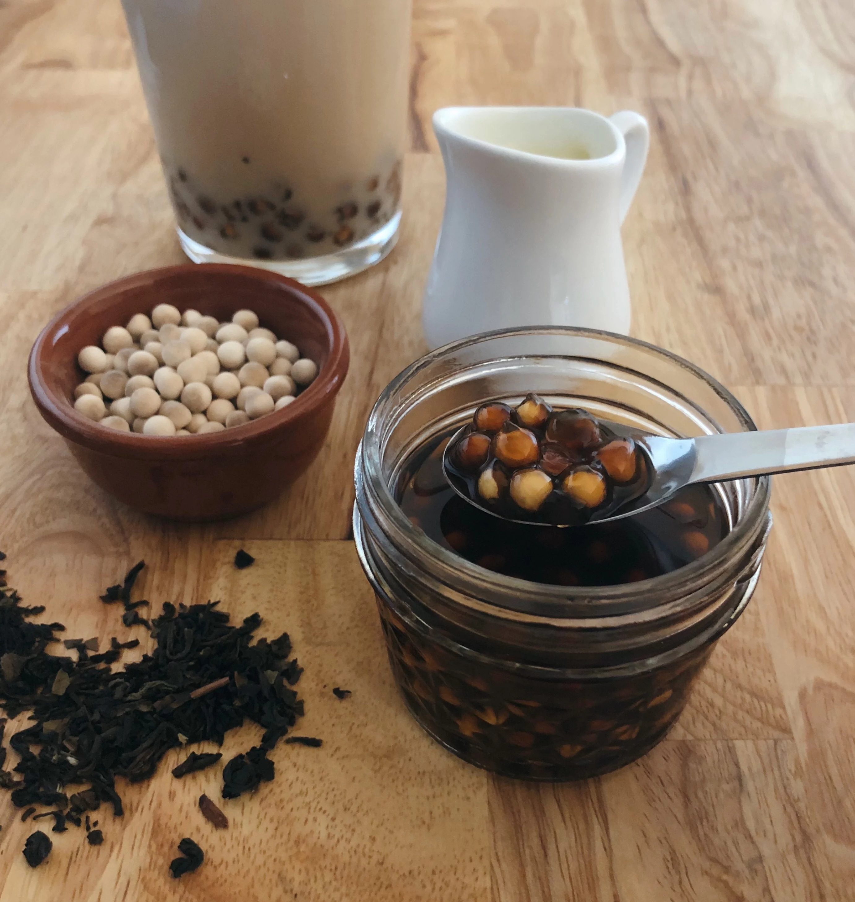

Boba

Description
Stinky (or fermented) tofu might not sound like the most appetising
food, but don't be put off by the name! It's true that it does have an
intense aroma and a corresponding depth of flavour, but as well as
that it's rich in several key nutrients and fits well into a healthy diet
or weight loss programme. So what is stinky tofu? Well, it's made from a
mixture of firm tofu (which you can buy fresh or make yourself from soft
tofu and a tofu press), fermented bean curd, plus a few other ingredients.
Ingredients
- 4¼ cups water, divided
- ¼ cup white tapioca pearls (boba)
- 2 tablespoons black tea leaves
- ¼ cup brown sugar
- 1 cup ice cubes
- ¼ cup milk
- 2 tablespoons sweetened condensed milk, or to taste (Optional)
Steps
- Bring 2 cups water to a boil in a small saucepan. Add tapioca
pearls and stir gently until they begin floating to the top of
the water. Reduce heat to medium and simmer until softened and
dark, about 25 minutes. Remove from heat, cover, and let sit for
15 minutes.
- Meanwhile, bring 2 cups water to a boil. Remove from heat and
add tea leaves. Let steep for 15 minutes. Strain out tea leaves
and refrigerate the tea.
- Drain pearls. Bring 1/4 cup of water to a boil in the empty
saucepan. Stir in brown sugar until dissolved. Immerse the pearls
in the syrup and let sit until room temperature, about 15 minutes.
- Divide the pearls and desired amount of syrup between 2 tall
glasses. Pour in tea. Add ice, milk, and sweetened condensed milk
to both glasses. Stir before drinking.